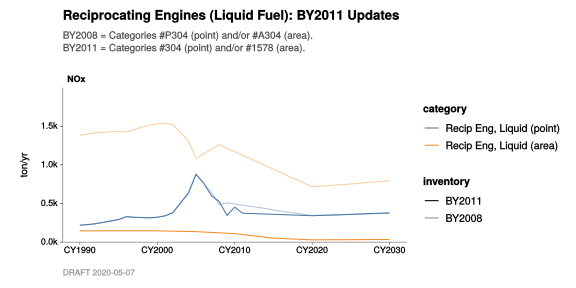
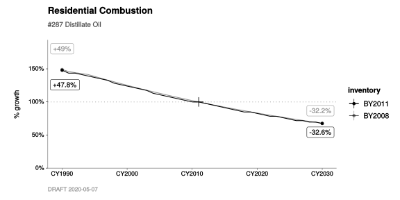

9 Comparing Inventories
This chapter is about comparing one inventory to another. You might wish, for example, to see the differences between the BY2011 and BY2008 versions of a single category. Or, you might want to compare groups of related categories.
Let’s use #288 Domestic Woodstoves as a simple example of how to do this with a single category.
9.1 Binding inventories together
First, we need to gain access to the BY2008 data, via library(BY2008). This is just like we did in Chapter 2, with library(BY2011).
Now we combine BY2011_annual_emission_data and BY2008_annual_emission_data into a single dataset named BY_data. We do this with bind_inventories().
#
# Using `bind_inventories()` creates a new column named `inventory`.
#
BY_data <-
bind_inventories(
BY2011 = BY2011_annual_emission_data,
BY2008 = BY2008_annual_emission_data)With our new BY_data, we can reuse the same old chart_annual_emissions_by().
9.2 Comparing two versions of a single category
Here we do just two things differently, compared to previous chapters:
- We specify
opacity = inventory. This causes the BY2011 data and the BY2008 data to be drawn with distinct line types (solid and dashed, respectively). - We supply
c(288, "A288")instead of just288. (See the note below.)
In BY2008_annual_emission_data, category IDs are prefixed by either “P” or “A”, and the numeric part of the ID doesn’t have to be unique! This is a convention that is no longer followed, from BY2011 onwards.
#
# Treat both of the following as "Domestic Wood Stoves":
#
# - BY2011 category #288
# - BY2008 category #A288
#
chart_data <-
BY_data %>%
filter_categories(
"Domestic Wood Stoves" = c(288, "A288")) %>%
filter_pollutants(
"NOx",
"CO") The c(288, "A288") tells filter_categories() to treat either/both of these categories as “Domestic Wood Stoves”.
#
# Chart by inventory, so we can compare.
#
chart_data %>%
chart_annual_emissions_by(
opacity = inventory,
flag_years = CY(1990, 2010, 2030),
title = "Domestic Woodstoves: BY2011 Updates",
subtitle = str_c(
"- CY1990-2005 estimates are about 10% lower.",
"- Estimates circa CY2010 are about 40% lower.",
"- Forecast is flat, rather than increasing.",
sep = "\n"))9.3 Groups of categories
What if we want to chart more than just a single category?
When groups of related category identifiers change from one year to the next, we can still visualize the data effectively using filter_categories() and chart_annual_emissions().
Here is a concrete example.
In
BY2008_annual_emission_data, we can see both"P304"and"A304"incat_id.- Taken together, these comprise estimates of emissions from stationary-source liquid-fueled reciprocating engines.
- The scope of
P304is limited to permitted sources, and is calculated using a point-source methodology. - The scope of
A304comprises any remaining emissions from the same kind of source, and is calculated using an area-source methodology.
In
BY2011_annual_emission_data, emissions from the same real-world activities are assigned to BY2011 categories#304(point) and#1578(area).
This can create some confusion. It means that when someone is speaking about “category 304”, they could be referring to BY2011 category #304 (point sources only). Or, if they have BY2008 in mind, they might be speaking about both P304 and A304 together.
Comparing totals
First, let’s treat all of these “Reciprocating Engines, Liquid Fuel” categories as one big group. And, let’s focus on just one pollutant, to keep things simple.
#
# Treat all of the following as "Recip Eng, Liquid Fuel":
#
# - BY2011 category #304 (point)
# - BY2008 category #P304 (point)
# - BY2011 category #1578 (area)
# - BY2008 category #A304 (area)
#
chart_data <-
BY_data %>%
filter_categories(
"Recip Eng, Liquid" = c(304, "P304", 1578, "A304")) %>%
filter_pollutants(
"NOx") #
# Chart by inventory, so we can compare the totals.
#
chart_data %>%
chart_annual_emissions_by(
opacity = inventory,
title = "Reciprocating Engines (Liquid Fuel): BY2011 Updates",
subtitle = str_c(
"BY2008 = Categories #P304 (point) and/or #A304 (area).",
"BY2011 = Categories #304 (point) and/or #1578 (area).",
sep = "\n"))
Comparing subtotals
We can see above that, for these categories, there are some considerable differences between BY2011 and BY2008 estimates of NOx emissions. What’s going on?
Let’s try grouping the “point” and “area” subsets separately in our call to filter_categories(), and see what happens. We’ll create one group named “Recip Eng, Liquid (point)”, and one group named “Recip Eng, Liquid (area)”. To the former, we’ll assign BY2011 #304 and BY2008 #P304; to the latter, BY2011 #1578 and BY2008 #A304.
#
# Treat these as "Recip Eng, Liquid Fuel (Point)":
#
# - BY2011 category #304
# - BY2008 category #P304
#
# ... and treat these as "Recip Eng, Liquid Fuel (Area)":
#
# - BY2011 category #1578
# - BY2008 category #A304
#
chart_data <-
BY_data %>%
filter_categories(
"Recip Eng, Liquid (point)" = c(304, "P304"),
"Recip Eng, Liquid (area)" = c(1578, "A304")) %>%
filter_pollutants(
"NOx") #
# Chart by inventory and by point/area, so we can compare the subtotals.
#
chart_data %>%
chart_annual_emissions_by(
opacity = inventory,
color = category,
title = "Reciprocating Engines (Liquid Fuel): BY2011 Updates",
subtitle = str_c(
"BY2008 = Categories #P304 (point) and/or #A304 (area).",
"BY2011 = Categories #304 (point) and/or #1578 (area).",
sep = "\n")) 
From this, we can see that the bulk of the difference is due to a much lower estimate for the area-source component.
Using filter_categories() and chart_annual_emissions() together is powerful. With it, you can review updates to any related groups of categories from different BY inventories, regardless of how their cat_id identifiers might have changed.
9.4 More Examples
Residential Combustion: Distillate Oil (Relative Growth)
BY_data %>%
filter_categories(
"#287 Distillate Oil" = c(287, "A287")) %>%
filter_pollutants(
"NOx") %>%
chart_annual_growth_by(
opacity = inventory,
base_year = CY(2011),
flag_years = CY(1990, 2030),
title = "Residential Combustion",
subtitle = "#287 Distillate Oil")
Petroleum Refining: Flares and Blowdown Systems
Small Bakeries
#
# To remove redundant flags, pass `flag_unique = TRUE`. Notice how the value
# "190.3 ton/yr" is now only displayed once at CY1990. Please note: This
# behavior may be changed in future updates to `ggtools` --- don't use it (yet)
# in production code.
#
BY_data %>%
filter_categories(
"#935 Small Bakeries" = c(935, "A935")) %>%
filter_pollutants(
"TOG") %>%
chart_annual_emissions_by(
alpha = inventory,
base_year = CY(2011),
flag_years = CY(1990, 2011, 2030),
flag_unique = TRUE,
title = "Industrial and Commercial Processes",
subtitle = "#935 Small Bakeries")